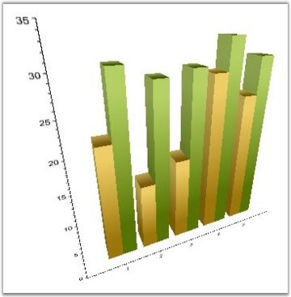
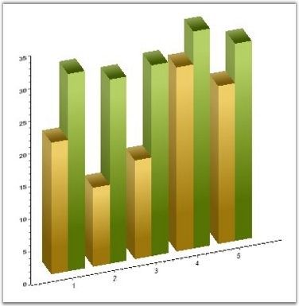

Chart 3D supports two types of camera projection views namely perspective and orthographic. Camera projection for the chart can be changed using the CameraProjection property of the Chart3D type, as follows.
|
[XAML]
<sfchart:ChartArea View3DMode="True"> <sfchart:ChartArea.Chart3DSettings> <sfchart:Chart3D CameraProjection="Orthographic"/> </sfchart:ChartArea.Chart3DSettings> </sfchart:ChartArea> |
|
[C#]
chart1.Areas[0].Chart3DSettings.CameraProjection = CameraProjection.Perspective; |

Figure 259: Perspective Projection

Figure 260: Orthographic Projection
See Also
Enabling 3D Mode, Customizing Side Walls